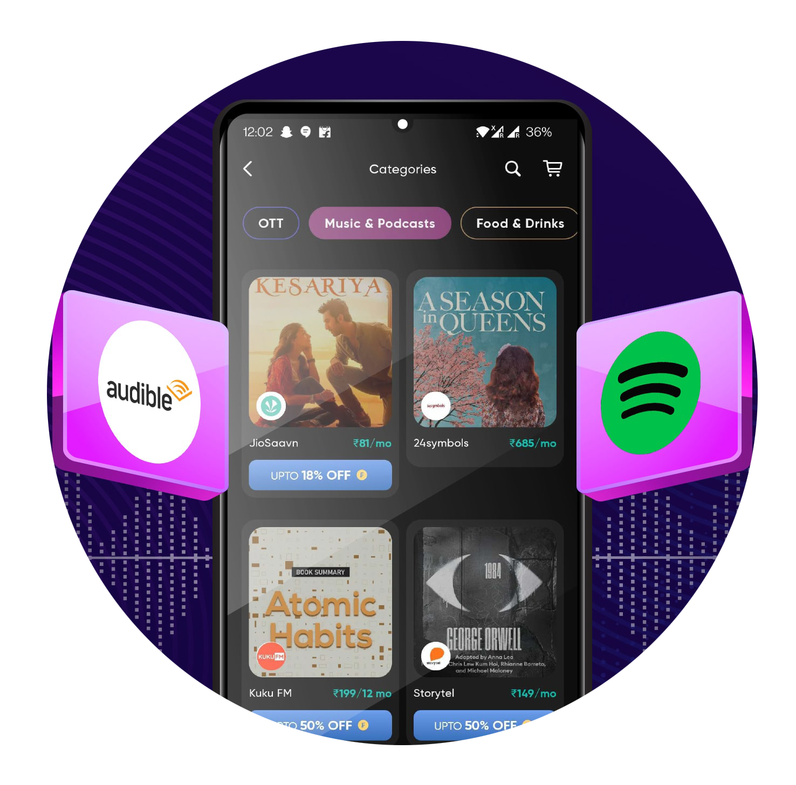

Projects
Personal Portfolio Website
A fully responsive portfolio built with HTML, CSS, and Tailwind CSS, designed to showcase my projects, skills, and achievements in a clean, modern layout. It features smooth animations, optimized performance, and a user‑friendly interface to create an engaging experience for visitors.
View ProjectBus Ticket Booking Management System
The Bus Ticket Booking Management System is a web-based platform that enables users to search for buses, view schedules, and book tickets online. It simplifies travel planning with real-time seat availability, secure payments, and admin control for managing routes, buses, and bookings, enhancing efficiency for both passengers and operators.
View Project
InnerVoice – Audiobook Streaming Platform
InnerVoice is a full‑stack audiobook platform built using Spring Boot for the backend and HTML, CSS, and JavaScript for the frontend. It allows users to explore, stream, and manage audiobooks through a clean and responsive interface. The backend provides secure API endpoints for audiobook data, user authentication, and streaming functionality, while the frontend delivers an engaging, easy‑to‑navigate experience. Designed with scalability in mind, InnerVoice supports future features like personalized recommendations, audiobook categorization, and search filters, making it an adaptable platform for book lovers.
View Project
Patient Management System
A Patient Management System (PMS) is a software application designed to streamline healthcare operations by managing patient information, appointments, medical records, billing, and communication. It helps healthcare providers efficiently track patient history, schedule visits, and ensure accurate record-keeping, improving overall patient care and administrative efficiency.
View Project